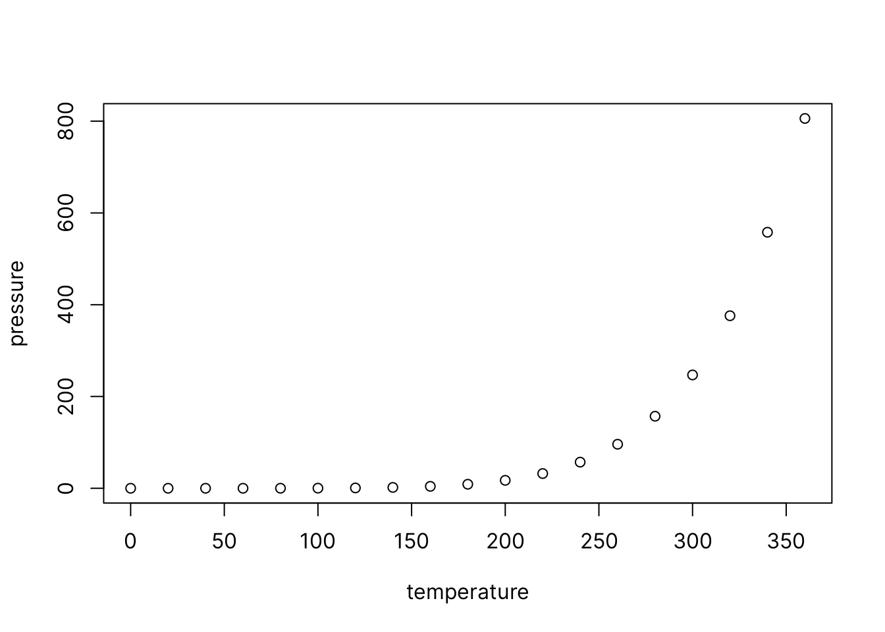

Chapter 1 R Markdown Basics
Here is a brief introduction into using R Markdown. Markdown is a simple formatting syntax for authoring HTML, PDF, and MS Word documents. R Markdown provides the flexibility of Markdown with the implementation of R input and output. For more details on using R Markdown see http://rmarkdown.rstudio.com.
Be careful with your spacing in Markdown documents. While whitespace largely is ignored, it does at times give Markdown signals as to how to proceed. As a habit, try to keep everything left aligned whenever possible, especially as you type a new paragraph. In other words, there is no need to indent basic text in the Rmd document (in fact, it might cause your text to do funny things if you do).
Let’s cite (???).
1.1 Lists
It’s easy to create a list. It can be unordered like
- Item 1
- Item 2
or it can be ordered like
- Item 1
- Item 2
Notice that I intentionally mislabeled Item 2 as number 4. Markdown automatically figures this out! You can put any numbers in the list and it will create the list. Check it out below.
To create a sublist, just indent the values a bit (at least four spaces or a tab). (Here’s one case where indentation is key!)
- Item 1
- Item 2
- Item 3
- Item 3a
- Item 3b
1.2 Line breaks
Make sure to add white space between lines if you’d like to start a new paragraph. Look at what happens below in the outputted document if you don’t:
Here is the first sentence. Here is another sentence. Here is the last sentence to end the paragraph. This should be a new paragraph.
Now for the correct way:
Here is the first sentence. Here is another sentence. Here is the last sentence to end the paragraph.
This should be a new paragraph.
1.3 R chunks
When you click the Knit button above a document will be generated that includes both content as well as the output of any embedded R code chunks within the document. You can embed an R code chunk like this (cars is a built-in R dataset):
summary(cars) speed dist
Min. : 4.0 Min. : 2.00
1st Qu.:12.0 1st Qu.: 26.00
Median :15.0 Median : 36.00
Mean :15.4 Mean : 42.98
3rd Qu.:19.0 3rd Qu.: 56.00
Max. :25.0 Max. :120.00 1.4 Inline code
If you’d like to put the results of your analysis directly into your discussion, add inline code like this:
The cos of \(2 \pi\) is 1.
Another example would be the direct calculation of the standard deviation:
The standard deviation of
speedincarsis 5.2876444.
One last neat feature is the use of the ifelse conditional statement which can be used to output text depending on the result of an R calculation:
The standard deviation is less than 6.
Note the use of > here, which signifies a quotation environment that will be indented.
As you see with $2 \pi$ above, mathematics can be added by surrounding the mathematical text with dollar signs. More examples of this are in Mathematics and Science if you uncomment the code in Math.
Let’s cite (???).
1.5 Including plots
You can also embed plots. For example, here is a way to use the base R graphics package to produce a plot using the built-in pressure dataset:

Note that the echo=FALSE parameter was added to the code chunk to prevent printing of the R code that generated the plot. There are plenty of other ways to add chunk options. More information is available at http://yihui.name/knitr/options/.
Another useful chunk option is the setting of cache=TRUE as you see here. If document rendering becomes time consuming due to long computations or plots that are expensive to generate you can use knitr caching to improve performance. Later in this file, you’ll see a way to reference plots created in R or external figures.
1.6 Loading and exploring data
Included in this template is a file called flights.csv. This file includes a subset of the larger dataset of information about all flights that departed from Seattle and Portland in 2014. More information about this dataset and its R package is available at http://github.com/ismayc/pnwflights14. This subset includes only Portland flights and only rows that were complete with no missing values. Merges were also done with the airports and airlines data sets in the pnwflights14 package to get more descriptive airport and airline names.
Testing citation (???). Or it can be (???).
We can load in this data set using the following command:
1.7 Additional resources
Markdown Cheatsheet - https://github.com/adam-p/markdown-here/wiki/Markdown-Cheatsheet
R Markdown Reference Guide - https://www.rstudio.com/wp-content/uploads/2015/03/rmarkdown-reference.pdf
Introduction to
dplyr- https://cran.rstudio.com/web/packages/dplyr/vignettes/introduction.htmlggplot2Documentation - http://docs.ggplot2.org/current/